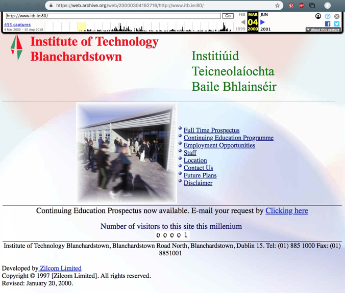

Key moments in ITB history!

Insitute of Technology Blanchardstown is a third level institution and will soon be part of TU Dublin as a university.There are currently around 5000 students studying at ITB and around 200 staff.
Since opening its doors back in 1999 Institute of Technology Blanchardstown has grown into one of the best institute of technology colleges in ireland. ITB started off with only a few students in its first year and with only a few courses to choose from. Here is an image of the first ITB website made.

Now in 2018 ITB boasts so much new equipment compared to when it first opened. There are several mac labs, plenty of lecture rooms with the latest audio and pcs, a sports hall, a gym, a canteen with delicious food an coffee machienes and much more.
As ITB is about to embark on a new chapter in January 2019, everyone is very excited of the prospect of the college becoming a university.This is a very exciting time for all three colleges, ITB, DIT and ITT, and this gives us a chance to look back on how far the college has come since its opening in 1999 whilst looking forward to the future. This website will commemorate ITBs origins, both as a campsus and a college. The website aims to show ‘ The story of ITB ’ with the focus of the website on the history of the college and its campus.

The mission of ITB is to serve the students and the community by teaching the skills needed for people to be able to serve in the community. The aim is to increase the number of people participating in third level education and give them the skills they need to allow them to work in an industry that they want. ITB aims to teach to the highest quality and offering a welcoming and supportive environment to students from all educational backgrounds.